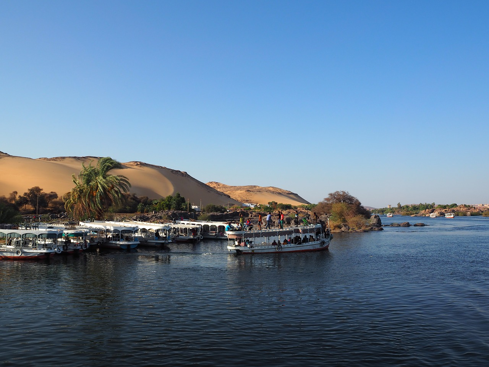
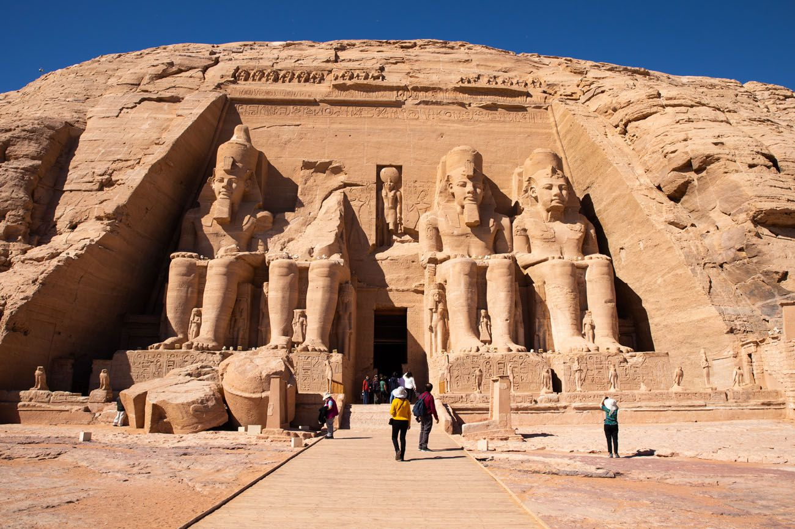
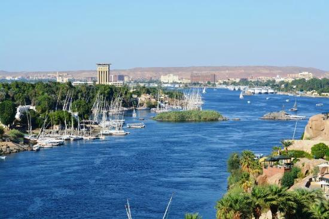

Aswan, a city on the Nile River, has been southern Egypt’s strategic and commercial gateway since antiquity. It contains significant archaeological sites like the Philae temple complex, on Agilkia Island near the landmark Aswan Dam. Philae’s ruins include the columned Temple of Isis, dating to the 4th century B.C. Downriver, Elephantine Island holds the Temple of Khnum, from the Third Dynasty.
The Abu Simbel temples are two massive rock temples at Abu Simbel (Arabic: أبو سمبل), a village in Aswan Governorate, Upper Egypt, near the border with Sudan. They are situated on the western bank of Lake Nasser, about 230 km (140 mi) southwest of Aswan (about 300 km (190 mi) by road). The complex is part of the UNESCO World Heritage Site known as the "Nubian Monuments",[1] which run from Abu Simbel downriver to Philae (near Aswan). The twin temples were originally carved out of the mountainside in the 13th century BC, during the 19th dynasty reign of the Pharaoh Ramesses II. They serve as a lasting monument to the king and his queen Nefertari, and commemorate his victory at the Battle of Kadesh. Their huge external rock relief figures have become iconic.
Known to the Ancient Egyptians as ꜣbw "Elephant" (Middle Egyptian: /ˈʀuːbaw/ → Medio-Late Egyptian: /ˈjuːbəʔ/ → Coptic: (Ⲉ)ⲓⲏⲃ /ˈjeβ/, preserved in its Hebrew name, יֵב 'yev'), the island of Elephantine stood at the border between Egypt and Nubia. It was an excellent defensive site for a city and its location made it a natural cargo transfer point for river trade. This border is near the Tropic of Cancer, the most northerly latitude at which the sun can appear directly overhead at noon and from which it appears to reverse direction or "turn back" at the solstices. Elephantine was a fort that stood just before the First Cataract of the Nile. During the Second Intermediate Period (1650–1550 BC), the fort marked the southern border of Egypt.[3]
